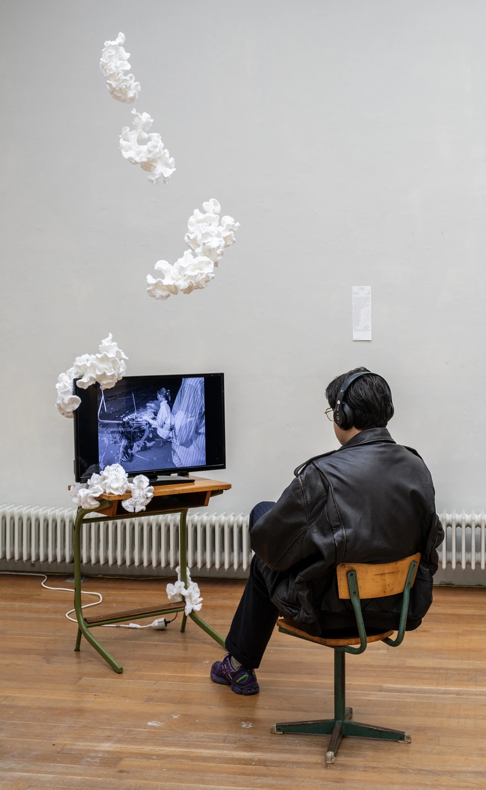
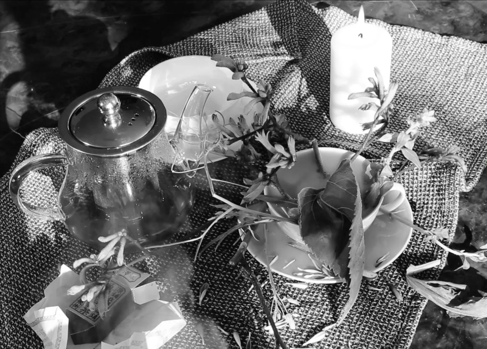
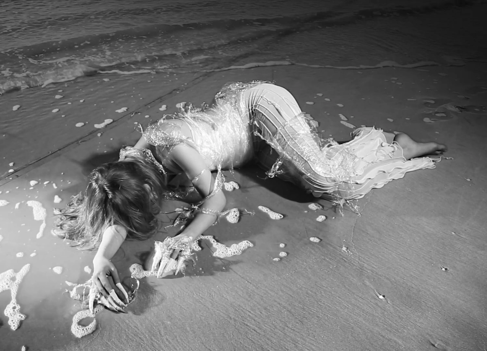
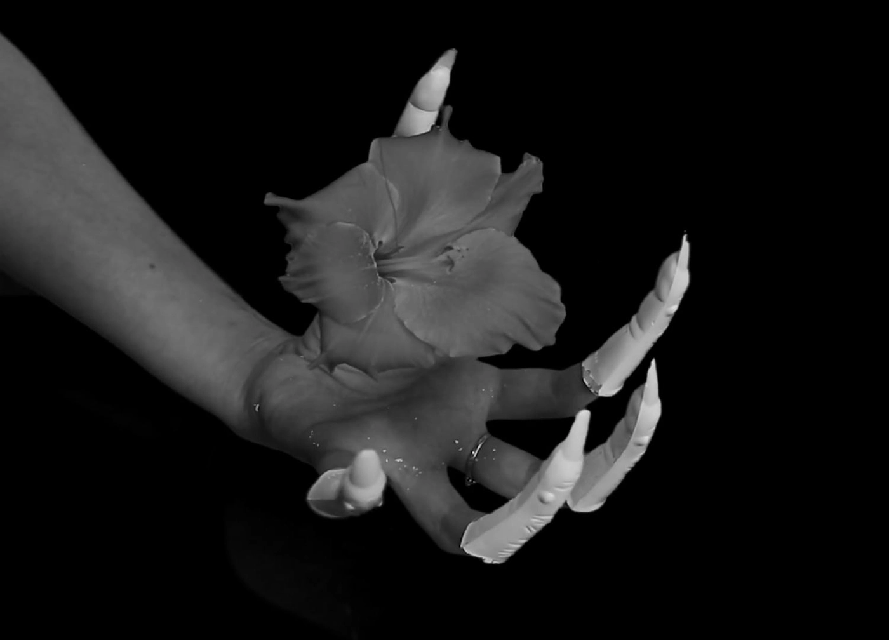
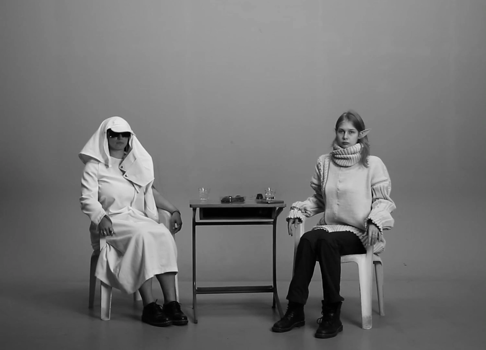
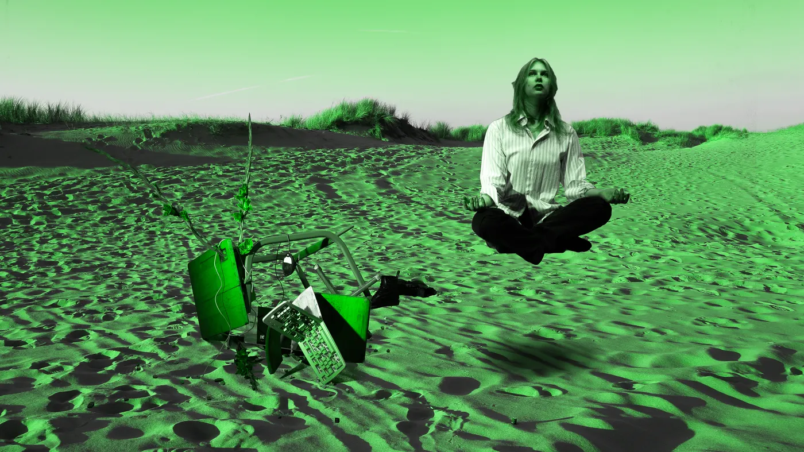
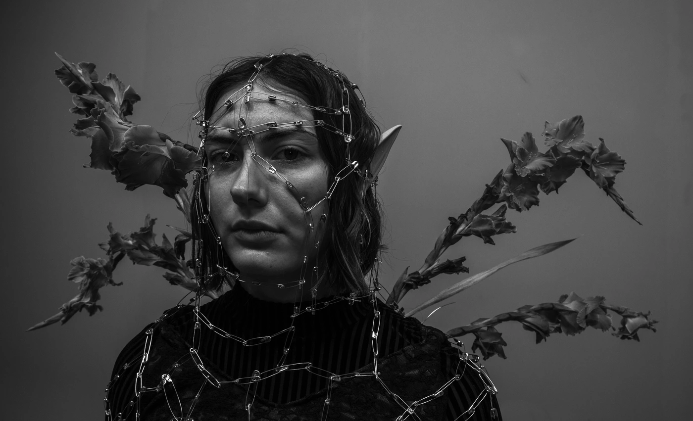
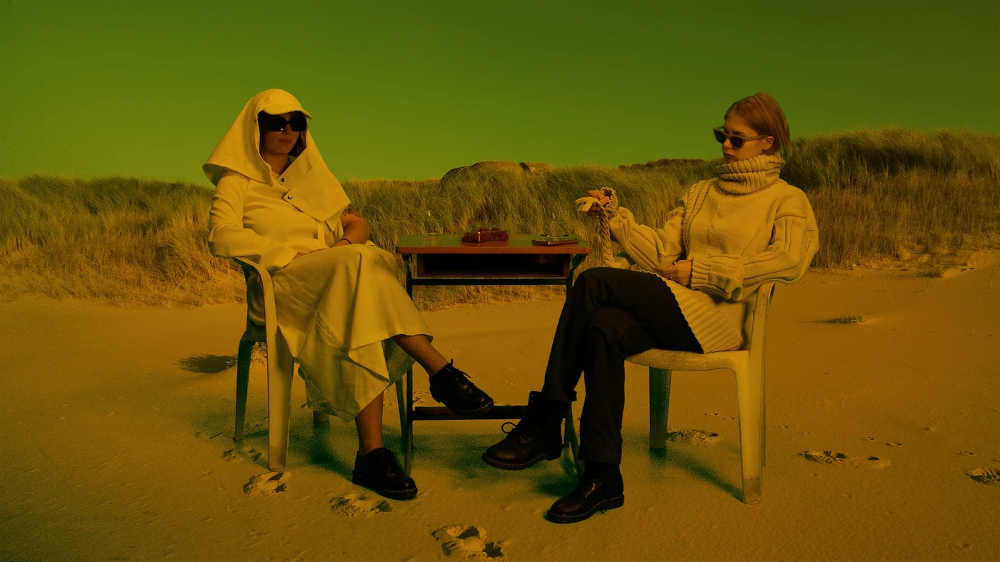

A month ago, I dreamt about transforming into a fantastical creature.
One who lives without the human condition, evading society in all it's man-made arrangements.
Are dreams of escapism an opportunity to expand upon the construction of our current reality as we now know it to be?
With this abundance of agency, perhaps we could expereince the world more freely.
‘Ether’ is a personal commentary on the path to self-actualisation within the confines of
regulated society. In this short film, the fantasies of the protagonist creep into her reality, and
alongside the living embodiment of this fantastical force, she navigates a metaphysical transformation
into a creature of her own imagination.
Video & Installation
3:36min | Neo-noir · Fantasy
The Hague, Netherlands · October 2024
Directed by Olivia Huynh
Actresses: Ines Grozeva & Julia Gazafi
Costume Design: Mina-Heloise Calori
Music: Metropolis: I. Auftakt : Der Maschinemensch
Canon EOS